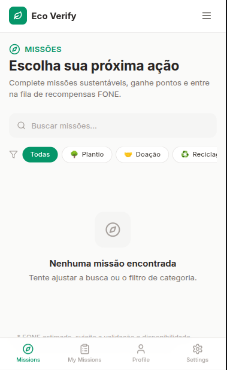
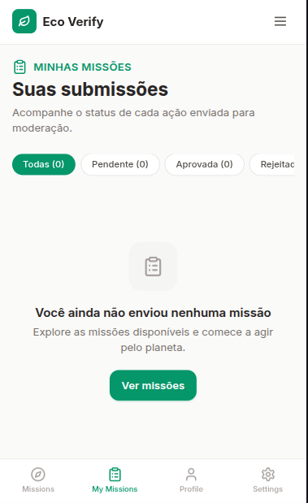
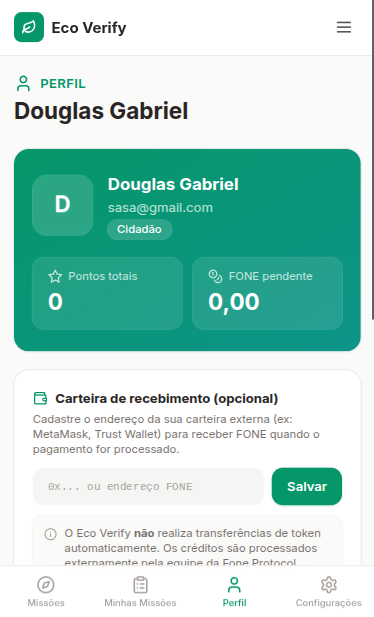

Uma solução inovadora de verificação sustentável desenhada para trazer transparência ecológica de forma simples, rápida e confiável.
✨ Lançamento para testes em breve...



Uma plataforma premiada internacionalmente, focada em sustentabilidade e verificação ecológica, que conquistou o 3º lugar em uma competição mundial.
Plataforma inteligente de verificação ecológica para empresas e consumidores conscientes.
O Eco Verify é uma plataforma web desenvolvida para trazer transparência e confiabilidade ao mercado de sustentabilidade. Através de verificações inteligentes, o sistema ajuda consumidores e empresas a validarem práticas ecológicas de forma acessível e confiável.
O projeto nasceu da necessidade de combater o greenwashing — quando empresas fazem alegações ambientais falsas — e oferecer uma ferramenta real para quem se importa com o planeta.
Veja o que já foi concluído e os próximos passos antes da plataforma oficial ir ao ar.
Desenvolvimento da estrutura do MVP, participação na competição internacional e conquista do 3º lugar mundial representando o Nordeste do Brasil.
Interface modernizada no Figma, arquitetura reconstruída no frontend e aperfeiçoamento da experiência do usuário.
Ajustes finos no sistema, otimização de performance e preparação do ambiente para receber as primeiras opiniões dos usuários.
Liberação do MVP para a comunidade testar e enviar sugestões, ajudando a moldar as próximas atualizações da plataforma.
🚀 Front-End & UX/UI Designer
Sou estudante de Análise e Desenvolvimento de Sistemas no Senac MedioTec Recife. Sou apaixonado por transformar ideias complexas em soluções digitais completas, unindo o olhar crítico do UX/UI Design com a robustez do desenvolvimento Full Stack.
Estou focado em criar softwares que não apenas funcionam, mas que resolvem problemas reais da sociedade. Cada linha de código que escrevo tem um propósito: causar impacto positivo no mundo.
Fui o ÚNICO responsável por representar o Brasil (Nordeste) em uma competição global, conquistando o terceiro lugar com um projeto focado em sustentabilidade e verificação ecológica. O projeto teve reconhecimento internacional e menções em diversos portais de tecnologia.
Além do Eco Verify, estou atualmente desenvolvendo um sistema focado em otimizar o fluxo de denúncias e a produtividade de fiscais e gestores públicos. Uma solução que une design centrado no usuário com tecnologia robusta para resolver problemas reais de gestão urbana.